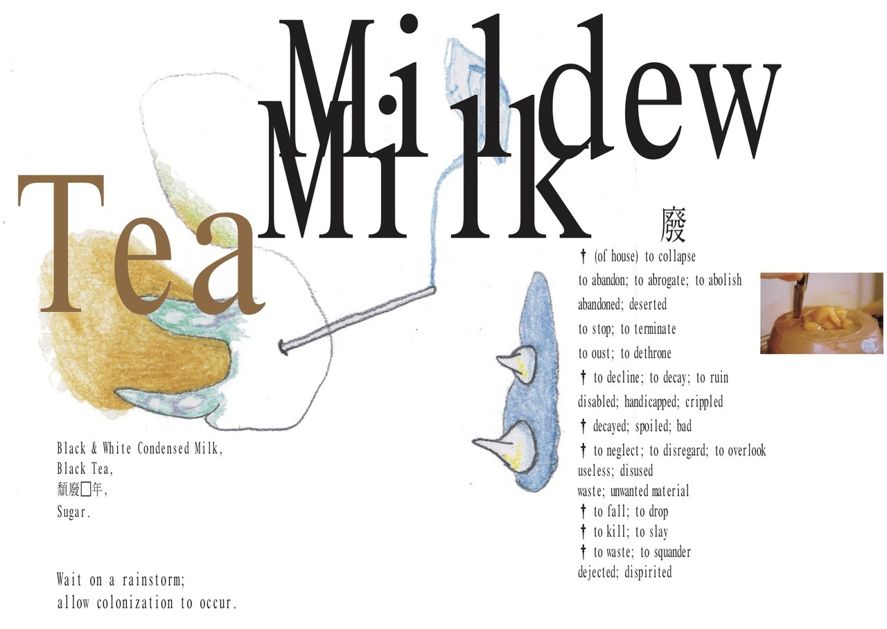
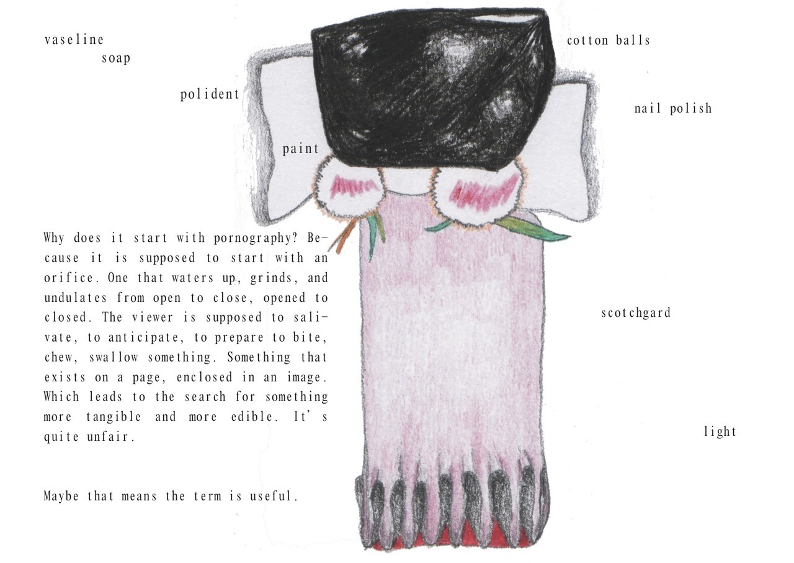
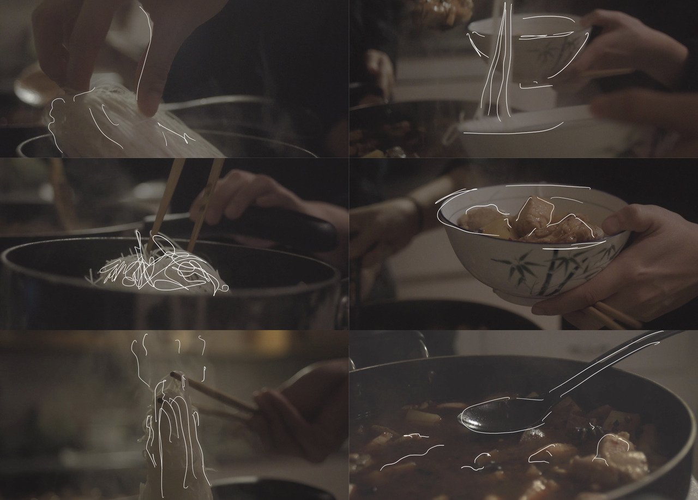
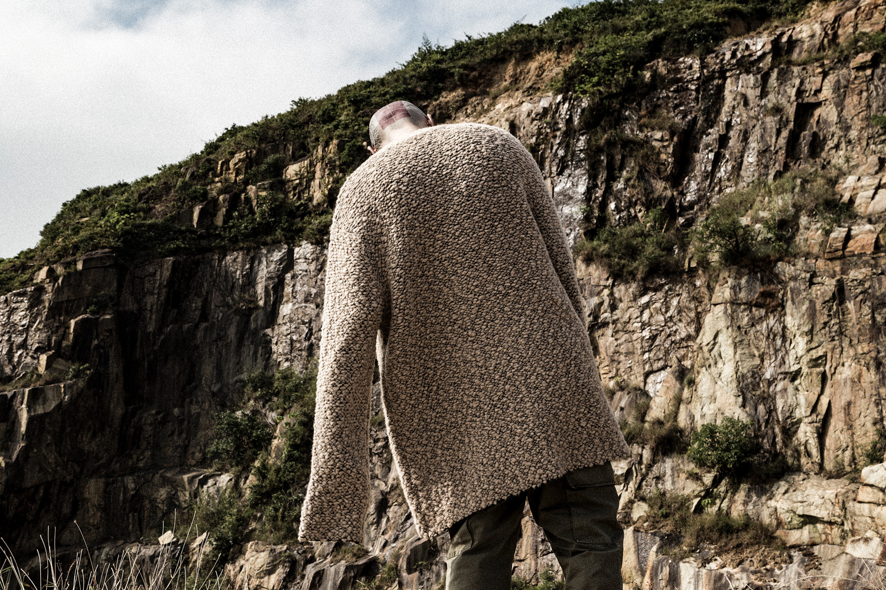

semi-homemade (2018)
a magazine exploring milennial home-making through the prism of food
sold at Printed Matter Fair at MOMA PS1 2018, Boston Art Book Fair 2018 , Singapore Art Book Fair 2019



how i never became an internet rapper (2017) constantly refining (2016)
fashion editorial for kanye west's yeezy season 3 collection, written and co-designed with HYPEBEAST

zero days (2016)
one of a series of blog posts covering VR news for interactive media company Eko